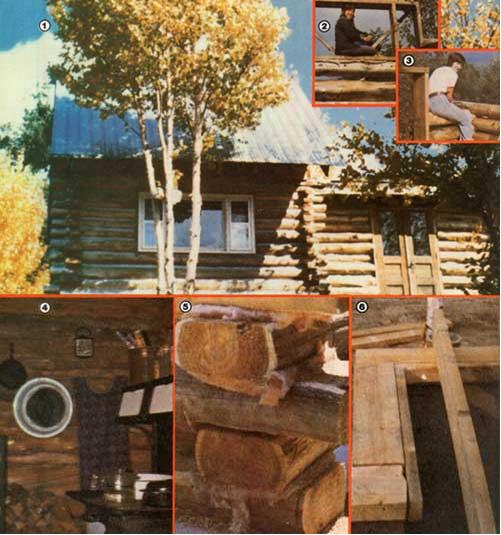

[1] The finished cabin provides a quiet answer to the warnings of skeptical acquaintances... who had predicted that ""those women"" would never get the job done! [2] Builders Cynthia Hill... [3] and Nancy Tucker, at work [4] the interior of the log structure is rustic and cozy. [5] Fiberglass?set between the timbers at the corners?reduces air leaks where the joints don't quite meet. [6] The floor joists were toenailed in at 16"" intervals.